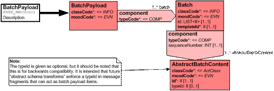
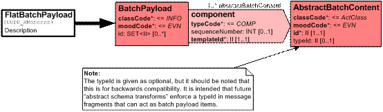
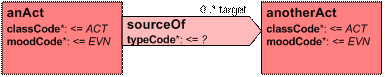

Multi-Version Batch Implementation
Draft for discussion – v0.9
Damian Murphy, 10 June 2005
Introduction
This document details the implementation of multi-version batches, from a structural viewpoint.
Static vs Dynamic Schema Definitions
Current HL7 tooling assumes that a message is defined by a “static” data model that applies to all instances of that message. This has the advantage that, during test-readiness and accreditation processes, message instances can be validated simply with reference to a single XML schema document, the identity of which is known by virtue of the message type. There are, however, a variety of disadvantages, most of which arise from this approach requiring that all possible run-time content types are specified at design time.
This static data model for a message means that the “validation root” and the “document root” are identical. In XML implementations, this is the simple and most common case. However it is not mandated by the XML schema specifications, which explicitly distinguish between a validation root and a document root[1].
The concept that, at any point in a message, a container might be common, with variable content, implies that the XML schema document against which the XML document instance should be validated is known only at run-time. According to the XML schema specification, the XML schema document can be assembled “lazily” (i.e. at run time as the XML document instance is processed) provided that, once a schema fragment for a particular element is determined, it is fixed for the rest of the processing of the XML document instance[2]. In an HL7 message payload, shared element definitions (for example, data types) are constant during the processing of a message, and payload-specific definitions are uniquely identified (via the “payload id uniqifier”) as belonging to a particular payload.
Dynamic Schema Processing Pattern
Unlike static definitions, where the complete schema document is known before the message is parsed, the dynamic model makes use of “any content models”. Examples of these can be seen in 3.1.x MiM documents, in the schema for the “ControlActEvent” (Infrastructure domain), where the definition of the ControlActEvent/subject element includes “<xs:any/>”.
This allows, literally, “any” XML content to be added as a child node of the ControlActEvent/subject element. As such, a message processor requires additional guidance to indicate what the actual content is. In schema documents generated by current HL7 tooling, this additional guidance is unnecessary because the “any” content model is never implemented. However, there is a general case where the detailed types for any given message instance is not known at design time[3] – for example where batches must be transmitted that may contain content of diverse versions.
Use of an “any content model” allows these run-time cases to be handled using a container model that supports a means to inform the receiving processor what sort of structure it is getting, and a way to document the sorts of structure that it is allowed to get (such that it is able to reject particular types of content on the grounds that they are invalid in its current context).
Two patterns are identified. On the one hand, grouping content of the same type presents performance benefits to receiving systems on the grounds that they do not need to process the collection of same-type content in detail. This would also allow the batch processor to be implemented as an adapter to older code that handled only a collection of content of a single type. On the other, some systems may persist objects such that the details of the object version are less important than other data – such as the date on which a request was made. For those systems the need to group by content type (version) may impose a severe performance penalty.
The first pattern, with content grouped by type, may be achieved with realisations of the pattern:

Figure 1. Type-grouped pattern
Here, the “BatchPayload” element exists to provide a payload root, which may contain multiple batches, one per content type. Each batch has 1..* instances of content of a single type, where the type information is held for the receiver, in the templateId[4] attribute. The Batch/component content model is “any” in the implementing XML schema document. Note that the “AbstractBatchContent” class is a documenting placeholder only – it is never expressed in the implementation. The HL7 typeId[5] attribute in this case is for information only. The Batch/id attribute is optional and is provided to support batch manifests – the LIST<II> allowing the identifiers for each of the batch items to be specified.
Constraints on allowed content types for any given realisation may be given as constraints on the values that Batch/templateId and AbstractBatchContent/typeId can carry. It is recommended that the constraint be carried formally in the AbstractBatchContent/typeId and, at XML schema generation time, this constraint implemented as a “simpleType” enumeration on the Batch/templateId/@extension content definition.
In the second instance, the AbstractBatchContent items are not grouped by type – each instance is identified by the templateId attribute of its containing component ActRelationship. This relies on there being multiple <component> elements contained within the BatchPayload instance:

Figure 2. Flat-type pattern
Again, at design time it is likely that a constraint be applied to the AbstractBatchContent/typeId, but to enforce this in an XML schema document would require the expression of the content/templateId such that templateId/@extension implements the constraint on what content types may actually be held.
In both patterns, there is support but no requirement for ordering in the batch. The content ids are UUIDs with no natural ordering[6], and any ordering should be implemented using the optional sequenceNumber[7].
Batch Handling Atomicity
No statement is made here about the atomicity of batch content. That is, whether all the content of a batch must succeed, or whether they can be permitted to fail in detail, is not specified as part of this pattern. Such processing modes are application-dependent – and applications MUST specify their exception mode (atomic or otherwise). To support reporting of failure in detail, realisations of AbstractBatchContent MUST be uniquely identifiable.
Processing Model
The processing model assumed for such “dynamic” batches is for a receiver to be able to validate the container (with its “any type” content), and then to handle the content specified at run-time. As an example[8], consider a receiver implementing a DOM processor and a factory pattern[9].
In this case, the inbound XML message is parsed into an object tree. For each “Batch” element, the templateId content is used to retrieve an instance of the appropriate handler from the factory. Each sub-tree rooted beneath the “Batch” is then passed to the handler.
Message Batches
Batching is intended to collect multiple messages for logistic convenience, or to meet a business requirement. Based on this, it is assumed that anything that can be sent in a batch could equally be sent as a series of individual messages and, as such, that the sender and recipient are always common. Therefore, batching is a payload "thing" and should be supported by the extant version of the transmission and control act infrastructure. Note that this requires that any applications that implement batching, define their mechanisms for handling exceptions in detail (i.e. where some batch members fail, whilst others succeed), and to support this, it must be possible to identify a specific item in a batch.
Batching must support multi-versioned content. To do otherwise requires either that a requesting system make separate requests for each current version, or that a responder makes multiple responses - one for each current version. Whilst this might happen as a result of the details of a particular service implementation, making it a requirement of the messaging system is an error.
Batching may support multiple content types. Whether such a feature is actually used in any given service implementation is dependent on the details of that implementation and of its business and architectural models. It is not something which should be enforced by the messaging systems.
The introduction of dynamic-schema container classes in the payload of HL7 messages satisfies the requirements for multi-versioned batches, and where needed, for multiple content types. The use of “abstract” classes in models – as found in the “Act” class in 3.1.x MiM “Trigger Event Control Act” – is applied to “container” classes in payloads to permit the carriage of various content versions and types, identified at run time using HL7 typeId attributes.
Note that two levels are required to carry multiple content types in the same batch. This is because the HL7 tool set does not permit *..* cardinality on act relationships, only n..*. As such, the root payload element will carry 1..* act relationships to the batch containers, and each batch container will be a control act that has a subject act relationship with an “any” content model, and will carry the HL7 typeId attribute to indicate what the actual content is at run time.
XML Schema Documents and Transforms
The HL7 payload models shown above use an “abstract” class that is never instantiated. The inclusion of such classes is currently unsupported by the HL7 RMIM Designer tools and, as such, the standard XML schema generator will write an XML schema document that includes the AbstractPrescriptionResponse as a concrete class.
Whilst support for such abstract classes is an aim for improved modelling tools, in the meantime the “standard” output may be trivially converted into that required by post-processing with an XSL transform. This conversion follows the rule that the standard XML schema document is copied except that:
- Element declarations (<xs:element>) that have abstract types, the “any content model”, have <xs:any/> substituted for the standard element.
- Complex type declarations (<xs:complexType>) for abstract types are omitted.
The transform given at appendix 1 implements these copying rules. To support this interim solution, we adopt the naming convention shown in figures 1 and 2. Abstract classes are indicated by names of the form “Abstract*”.
Schema Generator Implementation Requirements for the Flat-Typed Pattern
The “flat batch” pattern has two possible implementations, depending on the XML schema generator’s interpretation of the following moety:

Figure 3 - Act relationships
In this case, there is an optional one-to-many relationship between “anAct” and “anotherAct”, where the relationship itself has some properties. It may alternatively be represented as one of:
Figure 4 - Multi-association
Figure 5 - Multi-child
The XML schema generator currently in use explicitly generates “multi-association” outputs where the cardinality of the “sourceOf” child elements of “anAct” is specified in the XML schema document. The cardinality of “anotherAct” in the “sourceOf” element is unspecified and defaults to 1..1 as defined in the W3 XML Schema Specification, part 1.
Implementations of the XML schema generator that produce “multi-child” output will not support “flat-typed” pattern batching. The output of such a generator would equate to a “type-grouped” pattern. Because a “multi-child” schema generator would offer apparent efficiencies in on-the-wire message size, any new versions of such a tool require testing for this behaviour before being deployed in an environment where multi-content batching of the type described in this document, is in use.
Appendix 1. “Placeholder” Transform
<?xml version="1.0" encoding="UTF-8"?>
<xsl:stylesheet version="1.0" xmlns:xsl="http://www.w3.org/1999/XSL/Transform" xmlns:xs="http://www.w3.org/2001/XMLSchema">
<xsl:output version="1.0" encoding="UTF-8" indent="yes"/>
<!--
Multi-Version-Placeholder-Transform
Version: 1.2, 10 June 2005
Damian Murphy <damian.murphy@npfit.nhs.uk>
NHS Connecting For Health NPfIT Comms & Messaging Team
Clone XML schema document, removing type declarations for abstract types, and replacing
abstract element declarations with xs:anyType content models.
TODO: Put a check into the "xs:any" model writer to make sure that the parent Act carries the HL7
templateId "attribute" (i.e. element declaration)
-->
<xsl:template match="/">
<xsl:apply-templates/>
</xsl:template>
<xsl:template match="@*|node()">
<xsl:copy>
<xsl:for-each select="@*">
<xsl:variable name="aName" select="name()"/>
<xsl:attribute name="{$aName}">
<xsl:value-of select="."/>
</xsl:attribute>
</xsl:for-each>
<xsl:for-each select="*">
<xsl:call-template name="process">
<xsl:with-param name="this" select="."/>
</xsl:call-template>
</xsl:for-each>
</xsl:copy>
</xsl:template>
<xsl:template name="process">
<xsl:param name="this"/>
<xsl:variable name="eName" select="name($this)"/>
<xsl:choose>
<!--
Just skip a complexType declaration for an Abstract type
-->
<xsl:when test="($eName = 'xs:complexType') and contains($this/@name,'.Abstract')"/>
<!--
Use <xs:any/> in place of an element declaration with an Abstract type
-->
<xsl:when test="($eName = 'xs:element') and contains($this/@type,'.Abstract')">
<xsl:element name="xs:any"/>
</xsl:when>
<!--
Otherwise just clone the node
-->
<xsl:otherwise>
<xsl:element name="{$eName}">
<xsl:for-each select="$this/@*">
<xsl:variable name="aName" select="name()"/>
<xsl:attribute name="{$aName}">
<xsl:value-of select="."/>
</xsl:attribute>
</xsl:for-each>
<xsl:choose>
<xsl:when test="not($this/*)">
<xsl:value-of select="string($this)"/>
</xsl:when>
<xsl:otherwise>
<xsl:for-each select="$this/*">
<xsl:call-template name="process">
<xsl:with-param name="this" select="."/>
</xsl:call-template>
</xsl:for-each>
</xsl:otherwise>
</xsl:choose>
</xsl:element>
</xsl:otherwise>
</xsl:choose>
</xsl:template>
</xsl:stylesheet>
[1] http://www.w3.org/TR/xmlschema-1/#key-vr (section 5.2, “Assessing Schema Validity)
[3] Although the allowed set of content types may be known at design time, and may be constrained in the batch container definition.
[4] The templateId is used to carry information on “what is coming” – that is it is read by the receiving message processor and used to determine the detailed type of what follows.
[5] The typeId is used to carry information on the detailed type of “self”, so it exists in the abstract content model to provide information on what it “can be”.
[6] This is currently subject to review – in the case where a requirement is identified for an order to be imposed on batch content, this will be supported by the inclusion of a sequence number in the batch container.
[7] Some “natural ordering” of the batch items themselves may be implemented provided that the batch message is fully parsed before processing, but that type of behaviour is outside the scope of this document and use of the sequenceNumber is recommended rather than introducing a dependency on logic that is not expressed in the payload.
[8] This is given for simplicity, similar but more efficient processes may be implemented using event-driven models.
[9] See the “Gang of Four” Abstract Factory Pattern, for example at: http://www.tml.hut.fi/~pnr/Tik-76.278/gof/html/Abstract-factory.html